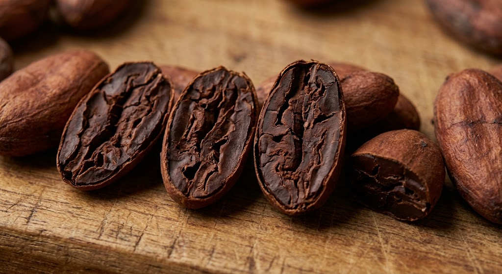
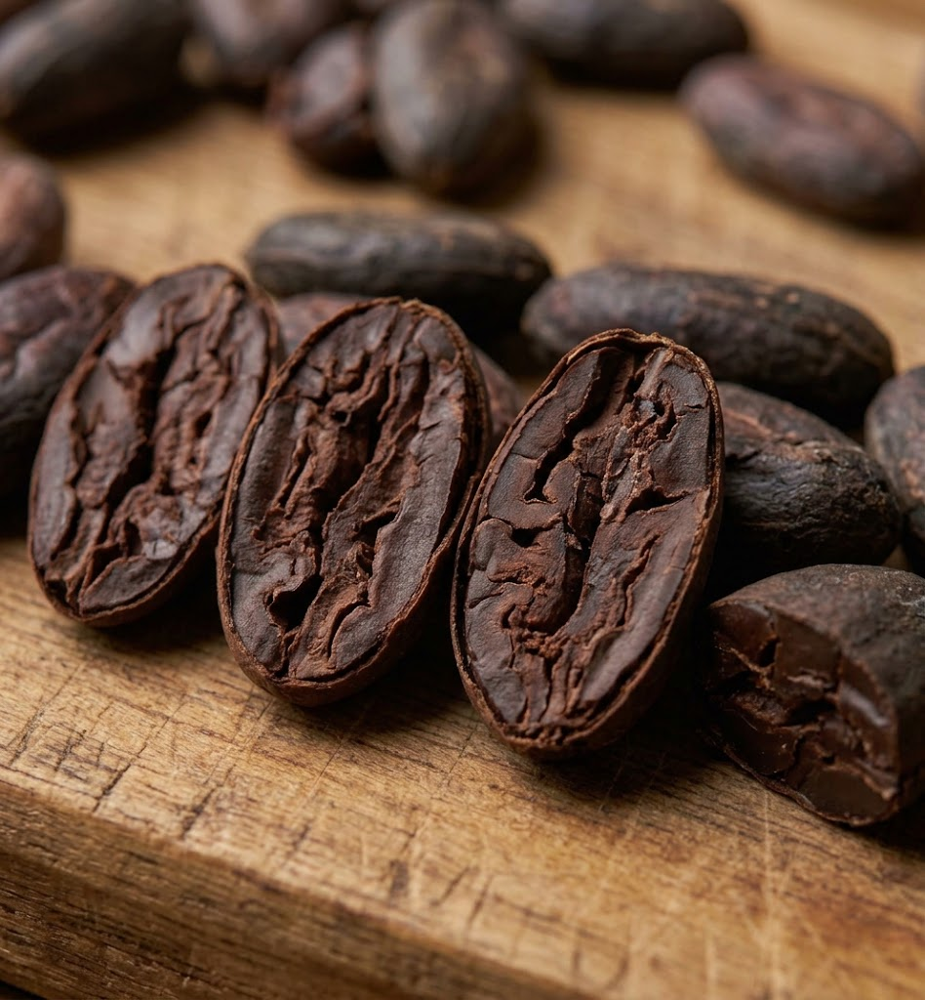

Overview
Summary of your cacao classification activity.
0
Batch records saved in this browser
0
Results received from the classification API
0
Records awaiting classification
Fermentation Categories
Classification stages supported by the system.

Fermentation is not yet sufficiently developed.

Fermentation is incomplete or uneven.

Fermentation appears well developed.

Possible over-fermentation; verify with quality checks.
Recent Batch Activity
Your latest batch records.
Classify Cacao Beans
Upload a cut-test photo to submit it for classification.
Photo Submission
Provide your batch information and cacao image.
Classification Result
The actual result will appear here when the classification API is connected.
Submit a batch. A real classification result requires a connected backend model.
Batch History
Review batch records created in this browser.
My Profile
Farmer account information.
Farmer Account
Farmer / Cacao Grower